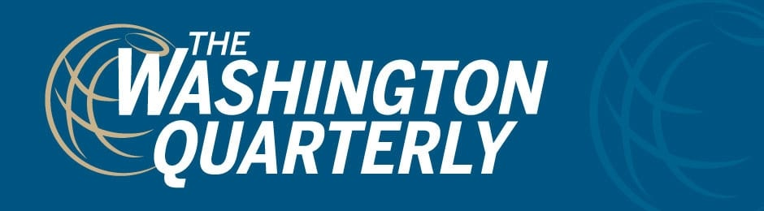
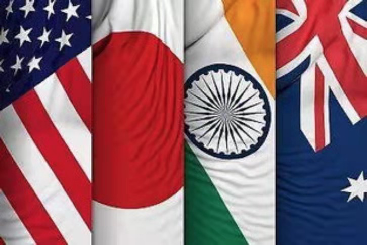
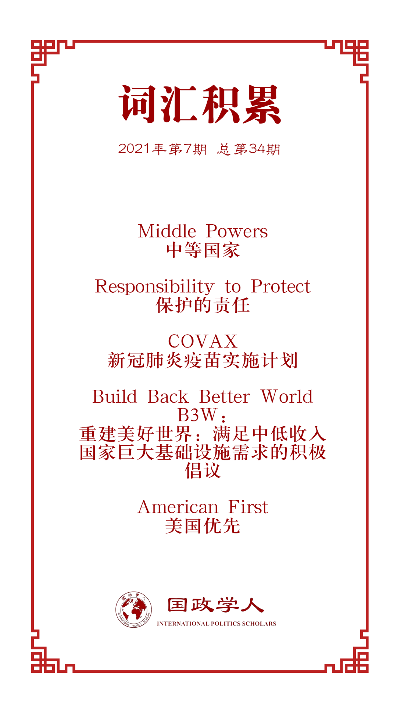

收录于合集 #理论研究 96个

作品简介
【作者】 Erik Brattberg，卡内基国际和平研究院欧洲项目主任，是欧洲政治和安全以及跨大西洋关系方面的专家。其目前的研究重点是美国对欧盟和北约的政策、大国竞争时代的跨大西洋合作、欧盟对技术的态度以及欧洲与中国和亚洲的关系。其曾在《华盛顿邮报》《金融时报》以及《外交政策》等刊物上发表过文章。
【编译】 杨沛鑫（国政学人编译员，中国人民大学国际关系学院硕士研究生）
【校对】 王芷汀
【审核】 姚寰宇
【排版】 胡蝶
【美编 】方引弓
【来源】 Brattberg, Erik. “Middle Power Diplomacy in an Age of US-China Tensions.” The Washington Quarterly 44.1 (2021): 219-238.
【归档】 《国际关系前沿》2021年第7期，总第34期。
期刊简介

美国《华盛顿季刊》（ The Washington Quarterly ），是一本有关国际安全、外交关系以及政策制定的国际事务季刊杂志，由战略与国际研究中心（CSIS）创办，乔治·华盛顿大学艾略特国际事务学院及泰勒弗朗西斯集团共同承办。2019年期刊影响因子1.288，在95种国际关系期刊中排名第47。
中美竞争时代的中等国家外交
Middle Power Diplomacy in an Age of US-China Tensions
Erik Brattberg
内容提要
本文阐述了在中美竞争和新冠疫情背景下，作为美国盟友的中等国家（Middle Power）应该如何制定外交政策。作者认为，受到特朗普政府时期“美国优先”战略的影响，美国的中等国家盟友在面对区域性挑战时不再能够完全依赖美国，而是需要进行自主外交。这些中等国家在贸易、金融以及气候变化等方面都尝试填补美国的缺位，并为新冠疫情下国际社会的恢复做出了一定的贡献。但客观来说，中等国家外交难以从根本上改变国际体系的属性，特朗普时期美国所奉行的单边主义留下的空白也无法通过中等国家完全弥补。因此，作者建议拜登政府的外交政策需要更加关注美国的中等国家盟友，并考虑让这些中等国家发挥更大的作用。
文章导读
01
绪论
在过去的一段时间内，特朗普政府推行“美国优先”（America First）的政策，加剧了中美之间的摩擦。与此同时，包括日本、欧洲国家等中等国家外交也在逐渐得到关注。在美国缺位的情况下，这些中等国家越来越多地承担起推动多边解决方案以应对各种区域和全球挑战的责任。在疫情和中美竞争加剧的背景下，中等国家无法真正依赖中美之间的任意一方来应对诸如新冠疫情和气候变化在内的挑战，这也使得其有更充分的理由紧密相连。但是，中等国家的联合既不能解决全球领导缺位的问题，也不能改变华盛顿和北京自身的盘算。因此，本文主要检验以下三个问题：
首先，中等国家的外交能够成为制度化的要素吗？其能否超越自身国家规模的限制，从根本上改变国际体系的性质？其次，中等国家能在后疫情时代将日益激烈的中美竞争转变为基于多边主义的商讨吗？最后，拜登政府的外交纲领将如何影响中等国家的利益考量，又将如何转变美国对领导世界事务的意愿？
02
变化中的中等国家角色
中等国家是一个较为模糊的概念，该术语一般指能够对国际事务的特定领域造成影响，塑造其所在的区域秩序，并且无需囿于大国控制的国家。 虽然印度尼西亚、墨西哥以及土耳其在这个概念内也算中等国家，但 本文的关注点还是放在加拿大、澳大利亚、日本、韩国、印度以及欧洲国家等美国的盟友国家上。 在此基础上，中等国家外交可指代，在大国的协助之外，中等国家独立发起的区域和全球倡议，典型案例就是关于“保护的责任”（Responsibility to Protect）的相关讨论。
21世纪初期，关于中等国家外交的讨论开始出现，而当下的中等国家外交则更加关注如何在中美竞争的背景下独立维护多边主义和以规则主导的国际秩序。以美国的盟友国家为代表的中等国家普遍支持以美国规则为核心的多边主义进程。强有力的国际规则、规范和机构的存在有助于保证国际稳定性和实用性，确保自由和开放的全球商业，并保护较小的国家免受较大邻国的胁迫。这也是欧亚区域的中等国家害怕从基于规则的秩序转变到以零和博弈为核心的权力秩序的一大原因。
03
“美国优先”时代的中等国家外交
奥巴马时期，美国及其传统盟友在主要的多边倡议上大致保持了一致，但在特朗普上台并提出“美国优先”后，美国的中等国家盟友只能寻求增强自身的自主性以及强化中等国家间关系以对冲“美国优先”带来的风险。因此，分析当前中等国家在“美国优先”背景下的外交可以从四个方面展开： 维持多边主义、安全伙伴关系的多元化、平衡中美竞争和应对新冠疫情 。
（一）维持多边主义（uphold multilateralism）
特朗普的退群行为使得中等国家尝试加强在贸易、气候变化、经济以及核不扩散方面的全球合作与协调安全网络。例如，特朗普退出TPP后，日本牵头在原有基础上提出了CPTPP的概念；同时，在WTO之外，欧盟和日本、欧盟和东盟之间都签订了自贸协议，以维持国际贸易的正常运转。
此外，其他的中等国家外交还尝试在科技领域建立联系。例如法国和加拿大共同在2019年的G7会议期间提出了全球AI伙伴关系（Global Partnership of AI）的概念，并于2020年5月得到了美国的支持；与此类似，2019年的大阪G20峰会上，日本提出了关于跨境数据流动的动议，法国最终推进了网络安全层次的“巴黎号召”（Paris Call），并得到了78个国家的支持。
同时，中等国家还尝试在政治层面建立新的协定。法国和德国在2019年的联合国大会上提出了“多边联盟”的概念，尝试建立一个基于规则的多边秩序，以处理人权、网络安全、气候变化和其他跨国议题。迄今为止，该“联盟”最切实的影响是帮助制定国际法律公约来规范致命性自主武器的使用。但在中美俄三方都没有参与的背景下，这样的尝试显然是无力的。这些中等国家的目的也不是为了建立一个“反特朗普”联盟，而是试图弥补当下美国领导缺位的情况。
（二）安全伙伴关系的多元化（Diversify Security Partnerships）
在安全问题日益加剧的背景下，美国对其盟友的安全承诺可能会减弱，这让欧亚的中等国家感到担忧。其中一些国家试图在分担美国对其安全承诺的成本以鼓励美国参与地区防务与通过多样化安全关系提高自身安全之间取得平衡。北约就是一个典型的案例。美国在欧洲和加拿大的盟友尝试通过北约来保障自身安全。而在北约之外，这些中等国家也建立了与北约互补的机制来增强自身的战略自主性，同时降低对美国的单边依赖。
在印太区域，澳大利亚、印度以及日本也在积极构建双边或三边关系。澳大利亚和日本在2020年11月签署了有关双边军队互访和联合作训的协定；日本、澳大利亚和印度也在2015年签署了三方协定。这些协定的目的不是为了取代美国的领导地位，而是为了将印太区域建构为一个不受大国竞争限制的区域。同时，欧亚地区的中等国家也在积极寻求建立安全联系，英国和法国加强了各自在印太地区的安全角色。
（三）平衡中美竞争（Manage US-China Tensions）
美国的中等国家盟友不仅担心中国崛起带来的影响，也担心中美竞争和特朗普“脱钩”对全球经济和中等国家利益造成的冲击。作为回应，他们寻求在可能的情况下同时与美国和中国接触，并寻求新的举措以深化多边合作。
例如，欧盟、日本与特朗普政府以三边形式共同商讨中美之间的贸易问题，而非任由美国采取单边手段遏制中国。而面对中国提出的一带一路倡议时，欧盟和日本也寻求在基于规则的基础上进行应对，而非简单的反对。
在特朗普政府时期，欧盟和日本共同努力与美国合作，解决来自中国的经济和安全问题，同时与中国保持贸易往来。中欧投资协定和RCEP的成功签署印证了这一点。
（四）应对新冠疫情（Respond to the COVID-19 Pandemic）
而在应对疫情方面，中等国家的表现可圈可点。2020年4月特朗普威胁停止对WHO拨款后，欧盟于2020年5月通过了对新冠疫苗开发的拨款。英国也在2020年6月4日召开了一次全球疫苗峰会，向全球疫苗与免疫联盟（Gavi）提供了88亿美元的资金支持。德国和法国同样宣布加大对WHO的支持。在包括新冠肺炎疫苗实施计划（COVAX）的发起和全球疫苗的分配上，中等国家都表现出了较高的积极性。上述事实表明了中等国家在后疫情时代，特别是在中美竞争的背景下承担起了更多的国际责任。
另一个值得注意的举措是，澳大利亚呼吁全球调查疫情起源。这一呼吁旨在替代特朗普政府关于“武汉病毒”的煽动性言论。中等国家还呼吁国际社会更好地利用现有多边渠道，协调应对大流行。为了积极推动G7和G20集团的作用，中等国家呼吁在大流行期间对现有冲突进行全球停火。同时，包括加拿大、法国以及韩国在内的13个国家于2020年4月发表了应对疫情的联合声明。
这些举措共同证明了中等国家在新冠疫情和中美竞争的大背景下共同采取措施维护多边主义。在美国仍疲于应对国内疫情时，一些欧亚地区的中等国家已经在尽可能的帮助国际社会应对这场全球公共卫生危机。
04
**** 特朗普政府时期的中等国家外交
“中等民主国家”（ 译者注：原文中所使用的词汇为“like-minded democratic middle powers”，鉴于这部分中等国家在价值观上与美国的一致性，译者认为此处所指代的是美国的中等国家盟友。 ）之间的共同利益支撑了它们支持多边主义和独立于美国承担国际责任的努力，特别是在新冠疫情和中美竞争的大背景下。
然而，尽管取得了一些有意义的成果，中等国家外交的的记录喜忧参半，任何关于中等国家的时代已经到来的说法都为时过早。除非这些不断发展的伙伴关系和网络能够克服关键的挑战和障碍，否则对未来中等国家外交的期望应该保持适度。
中等国家的外交面临着很大的挑战。第一个挑战就是这些国家之间仍然存在较大的分歧。例如，在如何看待中国上显而易见的差异。第二，中等国家外交仍然缺乏一个固定的平台。虽然松散的问题导向性联盟具有灵活性，但其最近的倡议往往主要是对国际事件的反应。由于缺乏更正式的工作方法和定期召开形式(包括工作级官员和政策规划者之间的会议)，中等国家的外交大多仍将是临时和被动的。第三，国内政治可能会成为中等国家在国际层次展开外交的一大阻力。意大利和澳大利亚在近年来都面临着国内政治的波动。第四，尽管不受限制的大国竞争的兴起为中等国家采取行动提供了理由，但这有可能使国家之间的交易较少基于规范。如果处理不当，这种心态可能会缩小志同道合的中等国家与其他全球伙伴有效寻求外交倡议的空间。
中等国家正在努力克服上述挑战。客观地说，中等国家很难填补美国缺位留下的空白，因此中等国家必须寻求不断创新的外交手段。欧盟的全球疫苗会议就是一个很好的例子。然而，要想取得更广泛的成功，中等国家必须从口头承诺转变为实际行动。这包括在更加具体的安全事务上进行合作。同样，中等国家不应仅仅满足于现状，而应该解决缺点并使多边体系现代化，以提升现有制度的透明度和运行效率。为实现这些目标，中等国家必须更加系统性的找到其所共有的特性，探索彼此之间的差异，并关注如何在政治、外交、经济以及军事上促进中等国家间的合作。其中一种可供操作的方法就是定期召开决策者的对话会。
简而言之，新冠疫情背景下的中等国家外交可能会持续一段时间，但在国际体系的结构性压力没有变化之前，至少在短期内不会对国际体系造成根本性的影响。
05
拜登时代的外交政策：以中等国家为基础的美国外交政策？
拜登政府的外交政策将在很大程度上决定中等国家外交将走向何方。 从目前来看，拜登时期的中等国家外交将在目的上根本区别于特朗普时期的中等国家外交。 在中美竞争的大背景下，美国的中等国家盟友将期望美国成为气候变化、核不扩散、贸易以及多边制度改革的可靠伙伴和领导。但需要注意的是，由于特朗普的“美国优先政策”对美国的信誉造成了损害，美国的中等国家盟友在拜登上台后将会保持一个相对审慎的态度。这些国家也将与美国保持一个适度的距离。
在这一层面上，美国在欧洲的盟友与在亚洲的盟友有所区别：法国和德国将以审慎的态度应对中美竞争，而澳大利亚和日本则更加希望加入美国主导的对华竞争。虽然拜登政府采取了很多措施重塑美国与其全球合作伙伴的有效联盟，但是让渡部分领导权给其中等国家盟友可以为美国带来一定的好处以鼓励盟友之间更多地分担负担，并使其他全球伙伴更容易签署外交倡议。从结果来看，美国可能不再是唯一的超级大国，但其会成为志同道合的伙伴网络的重要力量。拜登政府需要利用其庞大的盟友网络并接受这些盟国更高的自主性。
拜登政府下，美国对多边主义的回归意味着欧亚的中等国家盟友都将希望与华盛顿更多地合作并取得更多成就。但是，不应排除在没有美国领导的情况下继续进行中等国家外交合作。 拜登政府的多边外交政策需要考虑到，对于中等国家来说，美国的领导虽然必要，但不再充分。
**
**

译者评述
以中等国家为主体的研究不算是一个较为新颖的角度，关于中等国家的范围如何进行界定也一直是一个悬而未决的问题。因此，现有的对中等国家的研究一般可以分成两类：第一类是以中等国家本身作为研究对象，探讨中等国家的行为模式和对外政策偏好；第二类则是聚焦于某个国家，将其中等国家的身份作为分析背景，具体探讨该国的对外政策或国家利益偏好。本文对中等国家的探究较为新颖，其并没有从上述两个角度进行分析，而是将分析的对象聚焦在作为美国盟友的中等国家群体。有一部分现有研究对美国如何利用其中等国家盟友开展外交活动进行分析，但很少有研究将视角专门集中在美国的中等国家盟友上。
在新冠疫情和中美竞争的大背景下，美国的中等国家盟友会如何开展外交活动是一个问题。文中给出的答案是，由于特朗普的“美国优先”原则极大损害了美国在国际事务中的领导地位，因此中等国家需要更加积极地参与到全球治理的过程中以填补美国“后撤”留下的空间。特别是在新冠疫情的影响下，美国囿于国内疫情无法领导全球抗疫行动，中等国家只能增强本国的自主性以实现自助式的卫生治理。在这种情况下，拜登政府的选择将会异于特朗普政府，其不再单纯重复“美国优先”，而是在对华竞争的同时兼顾重塑美国对国际事务的领导地位。因此中等国家，特别是作为美国盟友的中等国家集团，会成为美国对华竞争战略的一大抓手。
从这一点上看，美国正在执行的区域战略和产业战略都将自身的中等国家盟友放在非常重要的位置，例如美日印澳四方对话机制（Quad）中，美国不断寻求强化日本、印度以及澳大利亚等中等国家在印太区域的存在，从而构建起基于美国和中等国家盟友合作网络上的对华竞争网络。此外，美国在产业上也积极推动欧洲中等国家和日本等国家的产业与规则重构，实现以B3W（Build Back Better World）为代表的产业链联盟，推进全球高端产业的“去中国化”。这些举措都在实际上促进了美国对全球事务的领导，同时又为中等国家发挥自身作用进行外交提供了充分的展示平台。所以，中等国家外交可能会在拜登政府时期，特别是在面对中美竞争和新冠疫情的背景下发挥出更大的作用。但必须指出的是，这种作用是以不冲击美国在全球事务中的领导权为基础的。中等国家在目前还是无法改变现有国际体系的属性，也无法成为中美竞争之外的第三股决定性力量。
词汇整理

文章观点不代表本平台观点，本平台评译分享的文章均出于专业学习之用, 不以任何盈利为目的，内容主要呈现对原文的介绍，原文内容请通过各高校购买的数据库自行下载。
好好学习，天天“在看”

国政学人
支持学术公益与知识传播
微信扫一扫赞赏作者 __赞赏
已喜欢，对作者说句悄悄话
取消 __
发送给作者
发送
最多40字，当前共字
上一页 1/3 下一页
长按二维码向我转账
支持学术公益与知识传播
受苹果公司新规定影响，微信 iOS 版的赞赏功能被关闭，可通过二维码转账支持公众号。